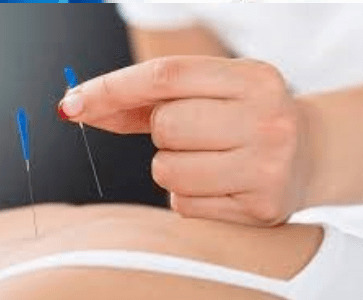

Tentang
Sering dengan zaman, manusia banyak disibukan dengan aktivitas kerja berposisikan tubuh duduk, baik dikantor, berkendara, sekolah bahkan main game yang berlama lama, maka gerak tubuh akan semakin sedikit sehingga tubuh akan mengalami kekakuan dan malas gerak. Hal ini tubuh perlu relaksasi supaya otot tetap lecture, persarafan dan tempat peredaran darah jadi tetap baik seningga oksigen, peredaran daran dan kelistrikan tubuh tetap terjaga.
Perilaku terbaru buru, salah gerak, karena kecelakaan ataupun factor degenerative, bisa mempengaruhi cedera otot, otot kaku, spasms saraf, capek pada ruas tulang belakang bahkan dislokasi.
Berbagai macan keluhan berdatangan dikarenakan sebab degenerative, lanjut usia, perawatan tubuh yang kurang serta kurangnya olahraga bisa mengakibatkan terhambatnya aktivitas dan ibadan sehari hari.Rumah Terapi Thabib H HARIS inshaa Allah bisa membantu untuk keluhan semua itu. Perpaduan metode Terapi olah gerak, strecing/peregangan, krek/ koreksi saraf dan tulang belakang, palpasi, pemijatan, hantaran panas/relaksasi otot dan saraf sangat bermanfaat untuk semua keluhan itu biidnillah

A
Akupuntur specialist
Akupuntur adalah teknik kesehatan holistik yang berasal dari praktek Pengobatan Tradisional tradisional, yang dilakukan oleh ahli tusuk jarum dengan merangsang titik-titik meredian pada tubuh dengan memasukkan jarum tipis ke dalam kulit.

A
Akupresure specialist
Akupresur merupakan teknik pengobatan tradisional dari Tiongkok. Teknik ini mirip dengan akupunktur, tetapi tidak menggunakan jarum. Akupresur diduga memiliki beberapa manfaat untuk kesehatan, seperti meningkatkan sirkulasi darah, merangsang sistem saraf, serta membuat tubuh menjadi rileks.
T
Terapi tulang belakang specialist
Perpaduan metode Terapi olah gerak, strecing/peregangan, krek/ koreksi saraf dan tulang belakang, palpasi, pemijatan, hantaran panas/relaksasi otot dan saraf sangat bermanfaat untuk semua keluhan tulang belakang.
Layanan
Kami sudah berpengalaman lebih dari 10 tahun dibidang pengobatan tradisional

Akupresure

Akupuntur

Pijat Cimande

Stracing
Harga
Harga RP.200.000 Per sesi
contact us
Informasi
- Monday - Friday: 9:30 AM to 6:30 PM
- Alamat: jl. Kp. Utan rt 01/18, kelurahan Jakasetia, kec. Bekasi Selatan, kota Bekasi, Jawa Barat
- Hp: 0815-1129-4428
- Wa: 0812-1843-5003
- Email: info@THABIB.com